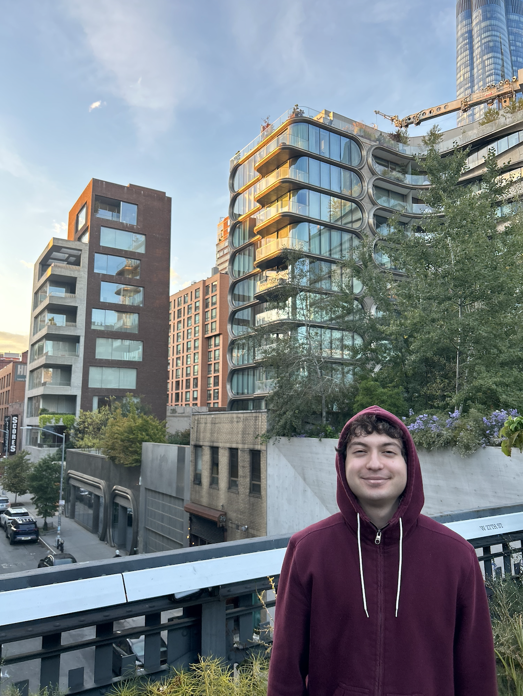

My name is Sebastian Erasso and I am 23 years old. I am currently attending community college while I figure out my career path. I am part of a family of four and I currently live in Washington state. I tend to stick to myself for the most part and I like to spend my time with my family. I'm also into any fantasy or science fiction types of media. I have a twin sister and we're both fans of a lot of the same TV shows and books. An honorable mention of a Sci-Fi film I like is Alien (the first one). And finally, a fun fact about me is that I don't have a middle name.

I grew up in the Bay Area, specifically Cupertino, California and lived there up until I graduated from high school. I really enjoyed the Bay Area; I love the weather and I also think the people are very friendly over there. I used to travel to neighboring cities with my friends and I personally believe every location there is great. There are a lot of excellent restaurants in Northern California and more importantly, they have the In-N-Out fast food chain which Washington unfortunately does not have many of (although there are still amazing restaurants in Washington as well).
print("Hello World")
"If you want to be happy, be." — Leo Tolstoy
Trying out different
formatting options.